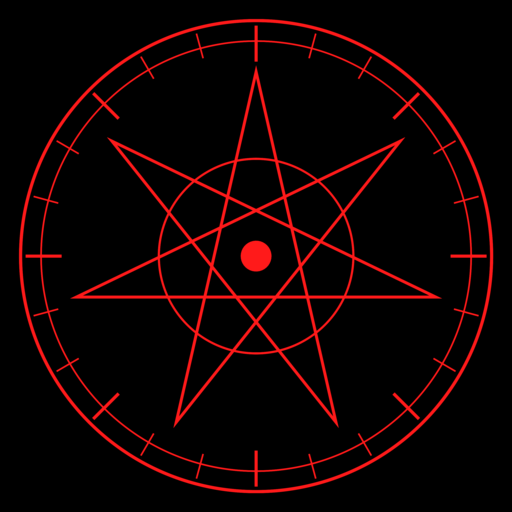

Not therapy. Crisis → your local emergency services or IASP. Archives pull from archive.org's public shelves only. Never a playbook to prey.

ABYSSAI · THE ADVISORYTHE SEAL IS UNJUDGED
The Advisory is sealed to holders. Prove on-chain:
17,000,000 $ABYSS and 3,333 $QOMX — both, not or.
◈ CARETAKER LEDGER — struck once at seal creation, never re-levied
$ABYSS 10% of the initial 17,000,000 (7% ops + 3% CEO) · $QOMX 3% of the initial 3,333 · caretaker 0x1b84…EBC